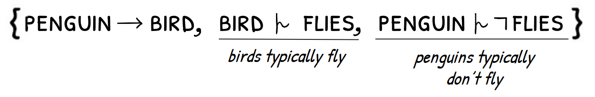

Classical Reasoning
Knowledge Representation and Reasoning expresses reasoning in terms of formal languages called logics. While there are many logics, we focus on propositional logic given its foundational role. In classical propositional logic, we can encode knowledge—e.g. penguins are birds, and birds fly—and infer new knowledge using entailment: Classical reasoning is in many ways the foundation for more advanced forms of reasoning such as KLM-style defeasible propositional logic. We therefore begin by considering explanation in the classical case.
Explanation
Sometimes we want to know why certain entailments hold.
Explanation tells us which statements in our knowledge base are responsible for a given entailment.
Suppose we know the unrelated information that birds have eyes:
 In our work, we focus on a form of explanation known as justification. Justifications are minimal subsets of statements that allow us to infer a conclusion. For example, the entailment that penguins fly for the knowledge base above has the justification
In our work, we focus on a form of explanation known as justification. Justifications are minimal subsets of statements that allow us to infer a conclusion. For example, the entailment that penguins fly for the knowledge base above has the justification
 since this amounts to 'just enough' information to allow for the inference that penguins fly. This illustrates how justifications correspond with how people explain inferences when reasoning: we certainly would not state 'birds have eyes' when substantiating why penguins fly.
since this amounts to 'just enough' information to allow for the inference that penguins fly. This illustrates how justifications correspond with how people explain inferences when reasoning: we certainly would not state 'birds have eyes' when substantiating why penguins fly.
Explanation has been shown to be an important aspect of reasoning systems. The concept is particularly useful for knowledge base debugging but has also been shown to be important for user comprehension and confidence in reasoning systems.
Defeasible Reasoning
Classical reasoning can be limiting because it cannot easily model statements that typically hold, but for which there might be exceptions. Say we try to model penguins a bit more accurately by expressing that penguins do not fly in the knowledge base: Since there is both a way to infer that penguins fly and that penguins don't fly—which is impossible—classical reasoning concludes that penguins cannot exist. In other words, we have removed our ability to reason about penguins in any meaningful sense. What we actually want to express is that birds typically fly, and then we can add that penguins are a specific type of bird that do not fly. Defeasible reasoning allows us to reason with this uncertainty and enables us to describe penguins more accurately:  Kraus, Lehmann and Magidor propose an approach to defeasible reasoning known as the KLM approach which is defined by a series of declarative properties. We focus on the KLM extension to propositional logic. In the same way that classical entailment allowed us to make inferences from classical knowledge, notions of defeasible entailment enable us to reason about defeasible knowledge. The simplest and most well-known such notion for KLM is Rational Closure.
Intuitively, Rational Closure achieves defeasible reasoning by ranking statements according to their typicality, with more general statements having a lower rank and more specific statements having a higher rank. We can think of this as partitioning the knowledge base into a series of levels: Since penguins are a specific (exceptional) kind of bird, statements about penguins are ranked higher than birds, and classical (certain) information appears in a special rank denoted by ∞. We can use this ranking to make inferences by 'throwing out' the lowest rank of statements until there are no classical inconsistencies left. For example, since the entire knowledge base classically entails that penguins do not exist, we remove the zeroth rank when reasoning about penguins: Since there are no remaining classical inconsistencies regarding penguins, we can use classical reasoning on the remaining statements to reason defeasibly about penguins.
Although not evident here, Rational Closure defines quite a conservative style of reasoning since we often 'throw away' more information than is necessary. Relevant and Lexicographic Closure are two different approaches that can be defined similarly but aim to retain more information so as to produce a less conservative form of reasoning.